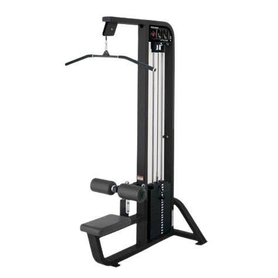
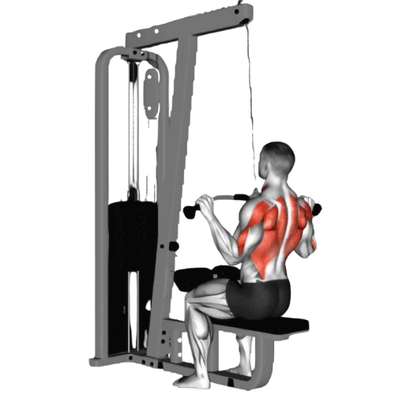
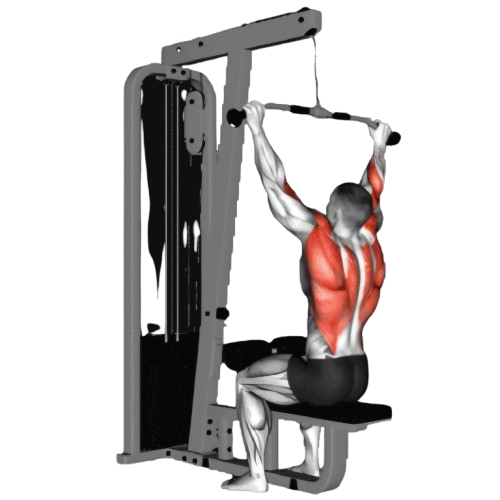

렛풀다운

- 머신에 앉아 바를 어깨 너비보다 조금 넓게 잡는다.
- 등은 곧게 펴고 가슴을 내밀어, 광배근이 자극될 수 있도록 자세를 잡는다.
- 바를 아래로 당겨 가슴 쪽으로 끌어당긴다.
- 팔꿈치를 구부리며, 바가 가슴 윗부분까지 오도록 한다. 이때 허리를 과도하게 젖히지 않도록 주의하고, 상체는 약간만 뒤로 젖혀준다.
- 이때 호흡은 뱉는다.
- 바를 천천히 원래 위치로 되돌리며 팔을 펴줍니다.
- 이때 호흡은 마신다.

주의사항
- 바를 당길 때 허리를 과도하게 젖히지 않도록 한다.
- 바를 너무 넓게 잡거나 너무 좁게 잡으면 운동의 효과가 줄어들 수 있다. 어깨 너비보다 약간 넓게 잡는 것이 좋다.
- 반동으로 바를 당기면 운동 효과가 줄어들고 부상 위험이 커진다.
- 지나치게 무거운 중량은 잘못된 자세를 유발할 수 있어 부상의 원인이 된다.
운동부위 및 효과
- 광배근, 승모근, 대원근, 전완근, 이두근
- 렛풀다운은 광배근을 집중적으로 자극해 넓고 두꺼운 등을 만드는 데 큰 도움을 준다.
- 렛풀다운은 등과 어깨 주변 근육을 강화하여 구부정한 자세를 개선할 수 있다.
- 광배근이 발달함에 따라 허리가 더 잘록해 보이는 효과가 있어 상체를 역삼각형으로 만들어준다. 이는 남성뿐 아니라 여성에게도 체형 개선에 유리한 운동이다.